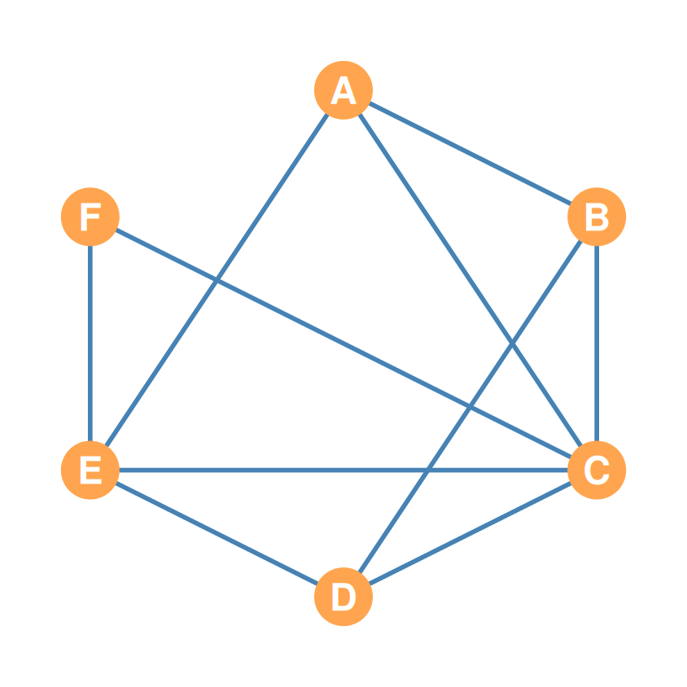
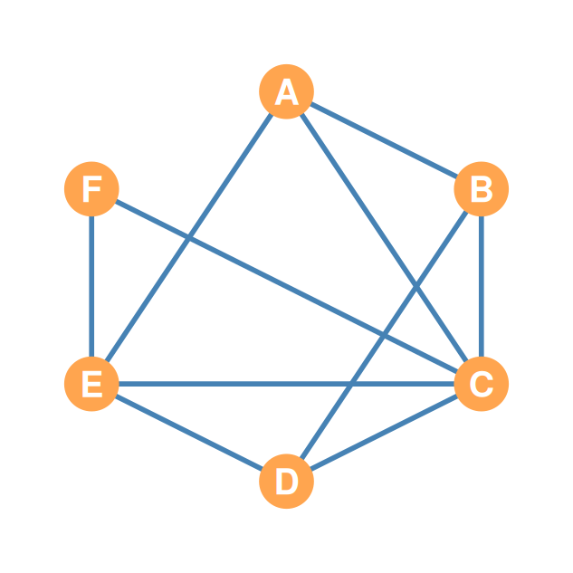
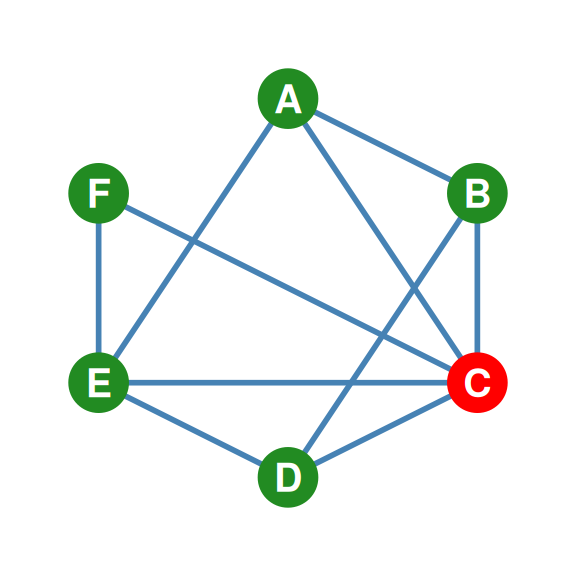
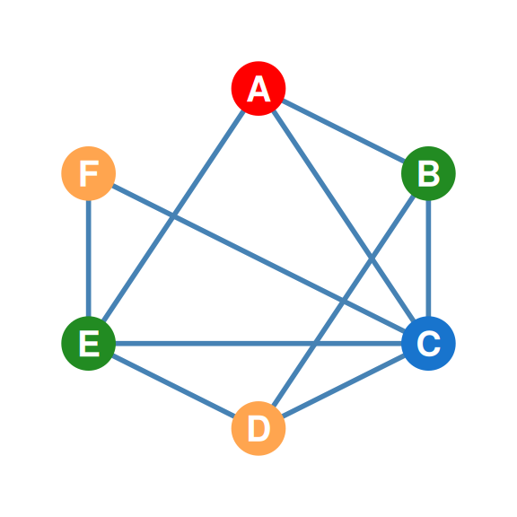
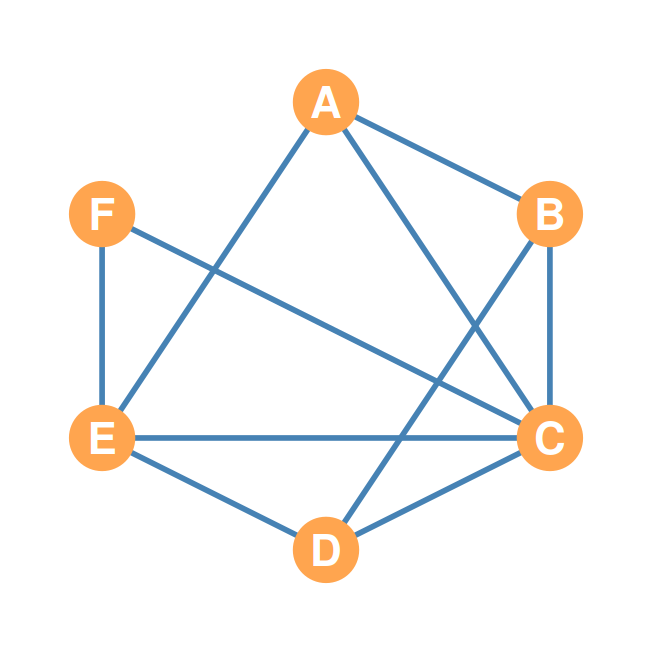

Multiplication, Conformability, and Applications (Paths & Walks)
\[\mathbf{A}_{3 \times \mathbf{5}} \times \mathbf{B}_{\mathbf{5} \times 6}\]
\[\mathbf{A}_{3 \times \mathbf{5}} \times \mathbf{B}_{\mathbf{5} \times 6} = \mathbf{C}_{3 \times 6}\]
When we compute cell \(c_{ij}\) in the product matrix, we: 1. Take Row \(i\) of the left matrix (which has as many elements as the left matrix has columns). 2. Take Column \(j\) of the right matrix (which has as many elements as the right matrix has rows). 3. Multiply element-by-element and sum.
For this to work, the row length and column length must match!
Example: - Row from \(\mathbf{A}\): 5 numbers - Column from \(\mathbf{B}\): 5 numbers - ✓ Can match them up and multiply.
If Column from \(\mathbf{B}\) had 7 numbers, we’d have a mismatch and can’t compute the sum.
\[\mathbf{A}_{2 \times \mathbf{3}} \times \mathbf{B}_{\mathbf{3} \times 2} = \mathbf{C}_{2 \times 2} \quad \text{(Square 2x2 Matrix)}\]
\[\mathbf{B}_{3 \times \mathbf{2}} \times \mathbf{A}_{\mathbf{2} \times 3} = \mathbf{D}_{3 \times 3} \quad \text{(Square 3x3 Matrix)}\]
Why does order matter socially?
This mirrors how network directionality and mediation structure change under different relationship sequences.
\[\mathbf{A} = \begin{pmatrix} \mathbf{3} & \mathbf{4} & \mathbf{5} \\ 7 & 6 & 3 \end{pmatrix} \quad \mathbf{B} = \begin{pmatrix} \mathbf{3} & 7 \\ \mathbf{4} & 9 \\ \mathbf{5} & 3 \end{pmatrix}\]
\[c_{11} = (\color{red}{3} \times \color{blue}{3}) + (\color{red}{4} \times \color{blue}{4}) + (\color{red}{5} \times \color{blue}{5})\] \[c_{11} = 9 + 16 + 25 = \mathbf{50}\]
\[\mathbf{C} = \begin{pmatrix} \mathbf{50} & ? \\ ? & ? \end{pmatrix}\]
\[c_{12} = (\color{red}{3} \times \color{blue}{7}) + (\color{red}{4} \times \color{blue}{9}) + (\color{red}{5} \times \color{blue}{3})\] \[c_{12} = 21 + 36 + 15 = \mathbf{72}\]
\[\mathbf{C} = \begin{pmatrix} 50 & \mathbf{72} \\ ? & ? \end{pmatrix}\]
\[c_{21} = (\color{red}{7} \times \color{blue}{3}) + (\color{red}{6} \times \color{blue}{4}) + (\color{red}{3} \times \color{blue}{5})\] \[c_{21} = 21 + 24 + 15 = \mathbf{60}\]
\[\mathbf{C} = \begin{pmatrix} 50 & 72 \\ \mathbf{60} & ? \end{pmatrix}\]
\[c_{22} = (\color{red}{7} \times \color{blue}{7}) + (\color{red}{6} \times \color{blue}{9}) + (\color{red}{3} \times \color{blue}{3})\] \[c_{22} = 49 + 54 + 9 = \mathbf{112}\]
\[\mathbf{C} = \begin{pmatrix} 50 & 72 \\ 60 & \mathbf{112} \end{pmatrix}\]
Before diving into applications, step back:
This is the foundation for all dynamic network applications: common neighbors, clustering, walks, reachability.
\[\mathbf{P} \times \mathbf{P}^T = \mathbf{C}_{\text{common}}\]


\(\mathbf{P}\) (the adjacency matrix)
| A | B | C | D | E | F | |
|---|---|---|---|---|---|---|
| A | 0 | 1 | 1 | 0 | 1 | 0 |
| B | 1 | 0 | 1 | 1 | 0 | 0 |
| C | 1 | 1 | 0 | 1 | 1 | 1 |
| D | 0 | 1 | 1 | 0 | 1 | 0 |
| E | 1 | 0 | 1 | 1 | 0 | 1 |
| F | 0 | 0 | 1 | 0 | 1 | 0 |
\(\mathbf{P}^T\) (columns of \(\mathbf{P}^T\) = rows of \(\mathbf{P}\))
| A | B | C | D | E | F | |
|---|---|---|---|---|---|---|
| A | 0 | 1 | 1 | 0 | 1 | 0 |
| B | 1 | 0 | 1 | 1 | 0 | 0 |
| C | 1 | 1 | 0 | 1 | 1 | 1 |
| D | 0 | 1 | 1 | 0 | 1 | 0 |
| E | 1 | 0 | 1 | 1 | 0 | 1 |
| F | 0 | 0 | 1 | 0 | 1 | 0 |

Row 3 of \(\mathbf{P}\) (C’s friendships)
| A | B | C | D | E | F | |
|---|---|---|---|---|---|---|
| A | 0 | 1 | 1 | 0 | 1 | 0 |
| B | 1 | 0 | 1 | 1 | 0 | 0 |
| C | 1 | 1 | 0 | 1 | 1 | 1 |
| D | 0 | 1 | 1 | 0 | 1 | 0 |
| E | 1 | 0 | 1 | 1 | 0 | 1 |
| F | 0 | 0 | 1 | 0 | 1 | 0 |
Column 3 of \(\mathbf{P}^T\) (= Row 3 of \(\mathbf{P}\))
| A | B | C | D | E | F | |
|---|---|---|---|---|---|---|
| A | 0 | 1 | 1 | 0 | 1 | 0 |
| B | 1 | 0 | 1 | 1 | 0 | 0 |
| C | 1 | 1 | 0 | 1 | 1 | 1 |
| D | 0 | 1 | 1 | 0 | 1 | 0 |
| E | 1 | 0 | 1 | 1 | 0 | 1 |
| F | 0 | 0 | 1 | 0 | 1 | 0 |
\[c_{33} = (\color{red}{1} \times \color{blue}{1}) + (\color{red}{1} \times \color{blue}{1}) + (\color{red}{0} \times \color{blue}{0}) + (\color{red}{1} \times \color{blue}{1}) + (\color{red}{1} \times \color{blue}{1}) + (\color{red}{1} \times \color{blue}{1}) = \mathbf{5}\]

Row 1 of \(\mathbf{P}\) (A’s friendships)
| A | B | C | D | E | F | |
|---|---|---|---|---|---|---|
| A | 0 | 1 | 1 | 0 | 1 | 0 |
| B | 1 | 0 | 1 | 1 | 0 | 0 |
| C | 1 | 1 | 0 | 1 | 1 | 1 |
| D | 0 | 1 | 1 | 0 | 1 | 0 |
| E | 1 | 0 | 1 | 1 | 0 | 1 |
| F | 0 | 0 | 1 | 0 | 1 | 0 |
Column 3 of \(\mathbf{P}^T\) (C’s friendships)
| A | B | C | D | E | F | |
|---|---|---|---|---|---|---|
| A | 0 | 1 | 1 | 0 | 1 | 0 |
| B | 1 | 0 | 1 | 1 | 0 | 0 |
| C | 1 | 1 | 0 | 1 | 1 | 1 |
| D | 0 | 1 | 1 | 0 | 1 | 0 |
| E | 1 | 0 | 1 | 1 | 0 | 1 |
| F | 0 | 0 | 1 | 0 | 1 | 0 |
\[c_{\text{A, C}} = (\color{red}{0} \times \color{blue}{1}) + (\color{red}{1} \times \color{blue}{1}) + (\color{red}{1} \times \color{blue}{0}) + (\color{red}{0} \times \color{blue}{1}) + (\color{red}{1} \times \color{blue}{1}) + (\color{red}{0} \times \color{blue}{1}) = \mathbf{2}\]
| A | B | C | D | E | F | |
|---|---|---|---|---|---|---|
| A | 3 | 1 | 2 | 3 | 1 | 2 |
| B | 1 | 3 | 2 | 1 | 3 | 1 |
| C | 2 | 2 | 5 | 2 | 3 | 1 |
| D | 3 | 1 | 2 | 3 | 1 | 2 |
| E | 1 | 3 | 3 | 1 | 4 | 1 |
| F | 2 | 1 | 1 | 2 | 1 | 2 |

Why does this matter?
For networks, walks reveal all indirect connections, not just optimal routes—important for diffusion, information flow, and redundancy.
\[\mathbf{P}^2 = \mathbf{P} \times \mathbf{P}\]
\[p^2_{\text{A, C}} = (\color{red}{0} \times \color{blue}{1}) + (\color{red}{1} \times \color{blue}{1}) + (\color{red}{1} \times \color{blue}{0}) + (\color{red}{0} \times \color{blue}{1}) + (\color{red}{1} \times \color{blue}{1}) + (\color{red}{0} \times \color{blue}{1}) = \mathbf{2}\]
\[p^2_{\text{C, C}} = (\color{red}{1} \times \color{blue}{1}) + (\color{red}{1} \times \color{blue}{1}) + (\color{red}{0} \times \color{blue}{0}) + (\color{red}{1} \times \color{blue}{1}) + (\color{red}{1} \times \color{blue}{1}) + (\color{red}{1} \times \color{blue}{1}) = \mathbf{5}\]
Why count walks?
\[\mathbf{P}^3 = \mathbf{P}^2 \times \mathbf{P}\]
\[p^3_{\text{C, C}} = (\color{red}{2} \times \color{blue}{1}) + (\color{red}{2} \times \color{blue}{1}) + (\color{red}{5} \times \color{blue}{0}) + (\color{red}{2} \times \color{blue}{1}) + (\color{red}{3} \times \color{blue}{1}) + (\color{red}{1} \times \color{blue}{1}) = \mathbf{10}\]
Why count triangles?
You now understand:
Given the 6-node “Parties With” network:
All of these operations—from basic arithmetic to high powers—tell stories about how social structure emerges from repeated interactions and interconnections.
You’ve mastered: - Basic matrix operations (addition, complement, Hadamard). - The transpose and its role in directed networks. - The dyad census and graph reciprocity. - Conformability and the mechanics of standard multiplication. - Dynamic applications: common neighbors, walks, and clustering.
Real-world applications: - Predict new ties (common neighbors → friendship formation). - Identify brokers (low triangle count + high paths). - Measure network resilience (walk multiplicities). - Detect communities (high clustering, sparse bridges).